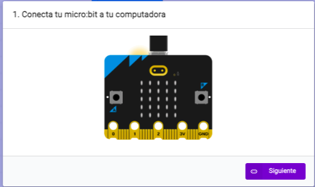

1. ¡Manos al código!

Para poder realizar este proyecto deberás aprender a codificar.
El código que utilizarás será el llamado programación por bloques.
Te animo a que practiques con Makecode y micro:bit.
Completa los siguientes retos.
Para poder realizar este proyecto deberás aprender a codificar.
El código que utilizarás será el llamado programación por bloques.
Te animo a que practiques con Makecode y micro:bit.
Completa los siguientes retos.
Accede a Makecode e inicia un nuevo proyecto cliqueando sobre "Nuevo proyecto".
Para hacer tu corazón sigue los siguientes pasos:
En primer lugar, di a la placa micro:bit que en todo momento (para siempre) encienda las luces en forma de corazón.
Ahora, di a la placa micro:bit que, sin parar (para siempre), encienda las luces en forma de corazón y las apague. De este modo, parecerá que está latiendo.
Por último, descarga el código a tu tarjeta.

Accede a Makecode e inicia un nuevo proyecto cliqueando sobre "Nuevo proyecto".
Para codificar tus caras sonrientes sigue los siguientes pasos:
En primer lugar, di a la placa micro:bit que cuando se pulse el botón A, se enciendan las luces en forma de cara feliz. Sigue estos pasos:
En segundo lugar, prepara una instrucción para la placa micro:bit en la que se pueda utilizar el botón B para mostrar otra cara. Sigue estos pasos:
Ahora, di a la placa micro:bit que cuando se pulse el botón B, se enciendan las luces en forma de cara triste. Sigue estos pasos:.
Por último, descarga el código en tu placa micro:bit.
Accede a Makecode e inicia un nuevo proyecto cliqueando sobre "Nuevo proyecto".
Para codificar tu dado sigue los siguientes pasos:
En primer lugar, di a la placa micro:bit que cuando se agite, que muestre un número. Sigue estos pasos:
En segundo lugar, como un dado tiene 6 números (del 1 al 6), di a la placa micro:bit que cuando se agite muestre un número al azar entre el 1 y el 6, al igual que si se lanzara un dado. Sigue estos pasos:
Por último, descarga el código a tu placa micro:bit:
Vamos con un reto un poco más difícil.
Accede a Makecode e inicia un nuevo proyecto cliqueando sobre "Nuevo proyecto".
Para codificar tu juego sigue los siguientes pasos:
En primer lugar, di a la placa micro:bit que si se agita, haga como si se mostrara una mano.
En segundo lugar, di a la placa micro:bit que si se agita, muestre una mano que elija al azar un número entre el 1 y el 3. ¿Por qué? Porque el número 1 será "Papel"; el número 2, "Piedra"; y el número 3, "Tijera".
A continuación, di a la placa micro:bit que, si al agitarla sale el número 1, que muestre las luces en forma de recuadro que representen un "Papel".
Con este código decimos a la micro:bit que: "Si agitamos la tarjeta, que escoja un número al azar entre 1 y 3. Después, le decimos que si sale el 1, que muestre en la pantalla las luces en forma de recuadro -Papel-".
Ahora, vamos a preparar la placa para que muestre "Tijeras" si no sale el número 1. Sigue estos pasos:
Ahora, vamos a decir a la micro:bit que cuando se agite la tarjeta y obtenga un número 2, aparezca una "piedra" en la pantalla, y que si no aparece un 1 o un 2, aparezca "Tijeras".
Por último, descarga el código a tu placa micro:bit:
¡Has hecho un trabajo extraordinario!
¿Te ha gustado codificar en tu placa micro:bit?
En la página web de Make it: code it hay muchos más retos que podrás realizar.
Podrás encontrarlos desde muy fáciles a un poco más complejos, pero todos guiados.
Así que mucho ánimo y ¡lánzate sin miedo a la programación!
Obra publicada con Licencia Creative Commons Reconocimiento No comercial Sin obra derivada 4.0